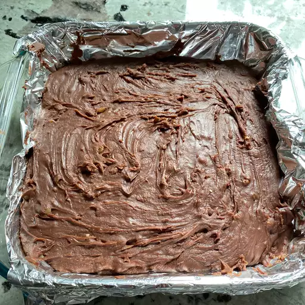

Przepis na pyszne ciasto

Description
Ready to make the best fudge of your life? You've come to the right place! You'll come back to this creamy fudge recipe again and again.
You'll find the full, step-by-step recipe below — but here's a brief overview of what you can expect when you make Aunt Teen's chocolate fudge:
Ingredients
- ½ cups white sugar
- ⅔ cup evaporated milk
- ¼ cup butter
- ¼ teaspoon salt
Steps
- Line an 8-inch square pan with aluminum foil; set aside.
- Combine sugar, marshmallow cream, evaporated milk, butter, and salt together in a large saucepan over medium heat; bring to a full boil and cook for 5 minutes, stirring constantly.
- Remove from heat and add milk chocolate chips and semisweet chocolate chips; stir until chocolate is melted and mixture is smooth. Stir in nuts and vanilla. Pour into prepared pan; chill in refrigerator for 2 hours, or until firm.